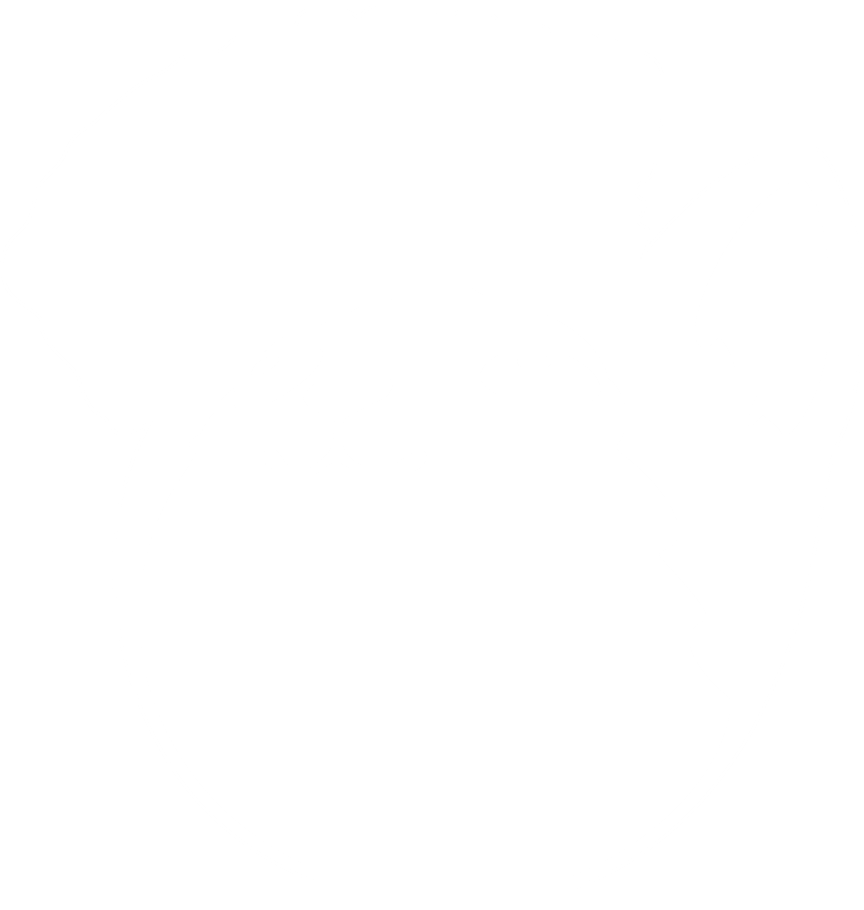
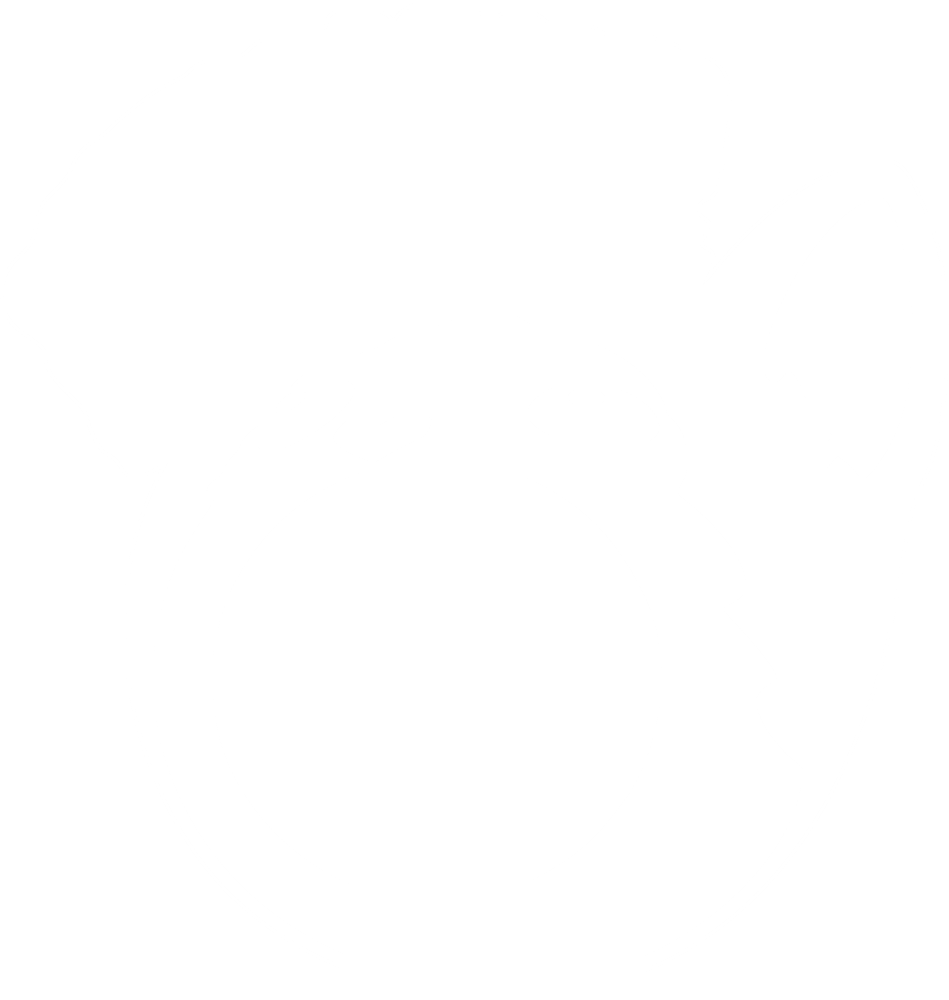
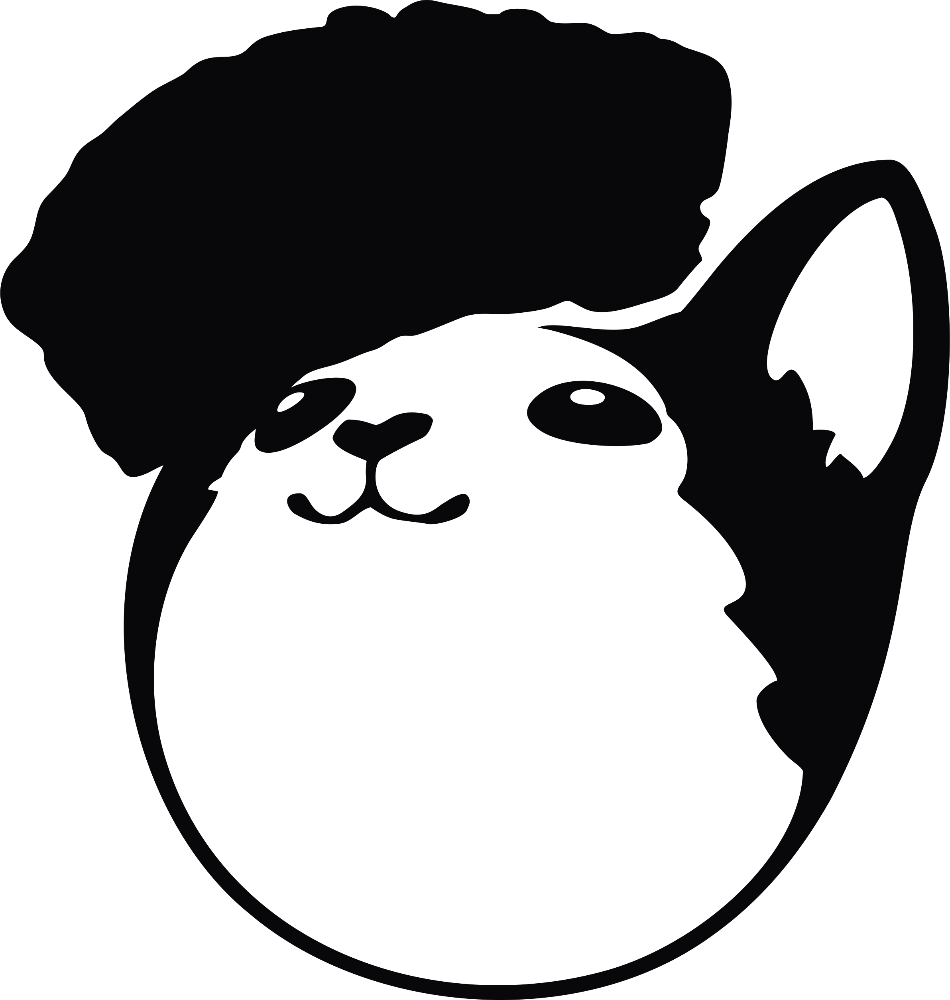
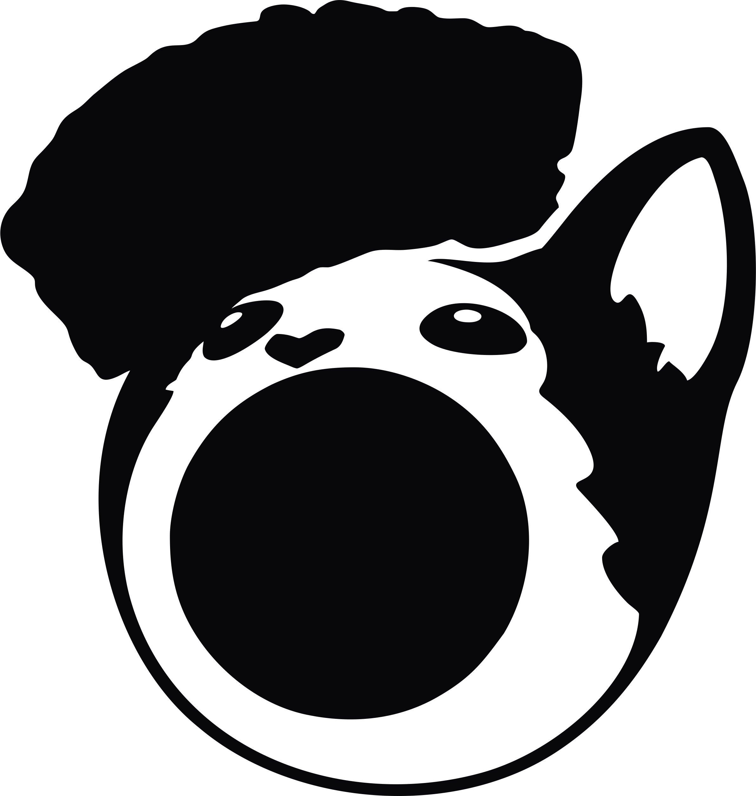
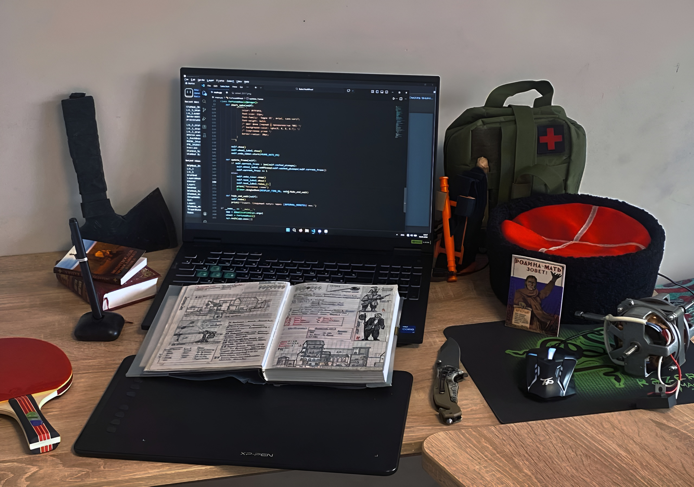

Цифровая студия. Сайты · Айдентика
Сайты и айдентика — от стратегии и визуальной системы до запуска и развития бренда.




подначитьМы — цифровая студия полного цикла: проектируем, оформляем и запускаем сайты и визуальные системы для бизнеса. Мы делаем так, чтобы увидев продукт, Вам захотелось кричать от радости.1
Го́йда (др. рус. междометие) — восклицание радости, искреннего одобрения.
Дизайн и разработка: лендинги, корпоративные сайты, интернет-магазины.
Логотип, фирменный стиль и визуальная система бренда.
Иллюстрация, книжная графика и концепт-арт — несколько работ, в которых особенно хорошо виден наш визуальный подход.
Не набор обещаний, а цепочка решений: каждый следующий шаг опирается на предыдущий.

Напишите нам напрямую — расскажите о задумке, а мы поможем понять, с чего начать.
Нажмите на номер, чтобы скопировать его.